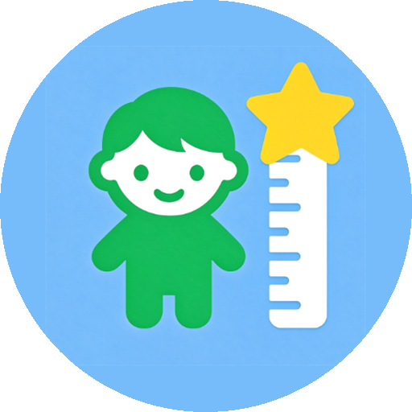

INTERNET permission — so it cannot upload, sync, or share anything. There are no
accounts, no ads, no analytics, and no third-party SDKs.
Nothing. No server is contacted at any point. All data you enter stays in the app's private storage on your device:
This information is processed entirely on your device to draw growth curves and estimate adult height. It is never transmitted anywhere, because the app contains no code capable of transmitting it.
None. There is no analytics, no crash reporting, no advertising SDK, and no embedded browser. The only data that ever leaves the app is what you explicitly send:
GrowStar is a tool for parents and guardians to record their own children's growth. The app is not directed at children as an audience, contains no social features, no advertising and no behavioural profiling. Data about a child is entered by the adult using the device and remains in that device's private storage; it is never collected by the developer or anyone else.
Data lives in the app's private data directory on your device (on Windows, under %LOCALAPPDATA%; on
Android, in the app's internal storage). It is retained until you delete it. Deleting a profile, clearing the app's
storage, or uninstalling the app removes the data permanently — there is no cloud copy and no backup held by us.
Because there is no cloud backup, please export your data periodically (Settings → Import / Export) if you want a copy outside the device.
Since all data is local, you already have full control: view, correct, export, or delete any record inside the app at any time. If you need help with any of these, contact the address below.
Growth curves and adult-height estimates are computed on your device from published reference data (CDC 2000 and WHO 2007 growth references, and the Khamis–Roche method). The app is a household record-keeping tool, not a medical device. Percentiles and predictions are statistical estimates for populations and do not constitute medical advice or a diagnosis; always consult a doctor about your child's growth. The names CDC and WHO belong to their respective organisations, which have not authorised or endorsed this app.
If this policy changes, the updated version will be published on this page with a new "Last updated" date. The app itself will continue to keep all data on your device.
Questions about privacy: open an issue at github.com/loylin-git/GrowStar-Releases/issues.